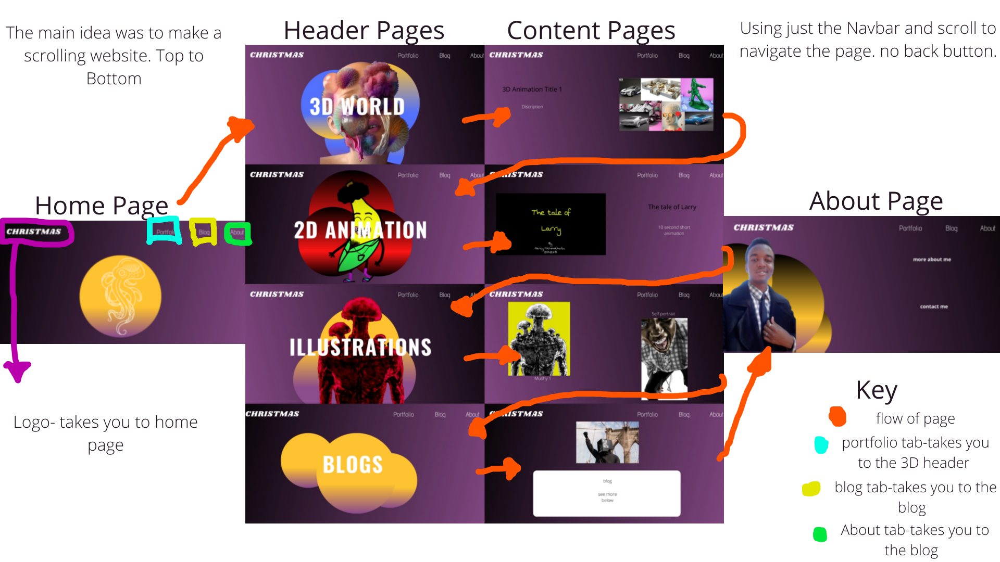

This is project Christmas, a portfolio website based on my alter ego named Christmas.
“ What is Christmas? Is it a holiday? Jesus’s Birthday? Time for family? Yes, that is all true but not in this case. Christmas is an Alter Ego, a colourful being filled with Joy, that is who Christmas is. He wants to create work that excites himself and those around him. He is boundless and seeks to learn more with what interests him. He is not perfect and struggles a lot even in areas he has interests in but it’s that interest that keeps him going to hopefully be better than what he was yesterday oh and he has a pet Octopus”
The purpose of the website is to display my portfolio in 3 fields that I enjoy, 2D & 3D Animation and illustrations. I am currently working on small scale projects within these fields so I may display them on the site. The main feel I want to give my artworks as well as the website is a mystical/surrealist feel. All the artists I look up to have achieved this from traditional artists like Salvador Dali and Frida Khalo to modern 3D artists like Antonio Tudisco and local artist African Ginger.
I also wanted to implement the technique of long scrolling. All the website I looked at for references used this technique. It felt easy scrolling through their work and I barely had to use the navigation bar. Nick Babich ,a developer and UX lover, defines long scrolling as “variety of long scrolling that allows users to scroll through a massive chunk of content with no finish line in sight (it’s the endless scrolling you see on Facebook, Twitter and Tumblr feeds) (Babich 2017).” It has the ability to get users interested. (Scrolling minimizes the cost of engagement needed to accomplish a set of user objectives. The benefit of not having to select "next" keeps users active with the content and less focused on navigating to the next page mechanics.) (Babich 2017) For mobile devices, it translates well. In the widespread adoption of this technique, the increased use of handheld screens played a key role: the smaller the monitor, the longer the scroll. Mobile devices' gesture controls make scrolling intuitive and enjoyable(Babich 2017).
To help me achieve my surrealistic effect I need to consider the colours I use and how. Initial I had the whole website in Purple, but I had to consider how I grouped my content hence the website is in different colours, but the colours correspond to the section/content you are looking at. I am still figuring out the fonts I want to use on my page as they add to the overall aesthetic of the page. I also plan to include liquid animation for two aspects; 1 the animation will occur on the solid background colour giving them a jelly like effect as the user hovers above it e.g. https://patrickheng.com/ . 2 the animation will also occur on the text as the user scrolls up the page similar to this page https://thibautfoussard.com/.
I hope that at the end the website will be industry ready, meaning that when people look at it I want them to see my potential and promote someone to actually say “ I want to work with you”.
Babich, N., 2017. Smashing magazine. [Online] Available at: https://www.smashingmagazine.com/2017/05/long-scrolling/ [Accessed 1 October 2020].
